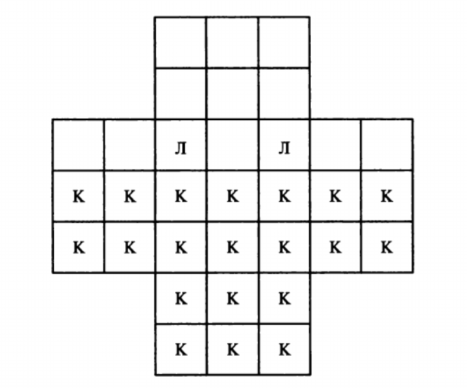

На поле, форма которого показана на рис. 12, находятся две лисы и 20 кур. Куры могут перемещаться на одну клетку вверх, влево или вправо, но не назад и не по диагонали. Лисы могут пе- ремещаться только на одну клетку вверх, вниз, влево и вправо. Лиса может съесть курицу, как в игре в шашки, т.е. если в гори- зонтальном или вертикальном направлении сразу за курицей сле- дует свободная клетка. При этом лисы обязаны всегда есть кур, и обязательно как можно больше. При возможности съесть одина- ковое число кур в разных направлениях, выбирается одно из них. Составить программу, играющую за лис, а игрок будет переме- щать кур, которые и начинают игру. Куры выигрывают партию, если девяти из них удается занять девять клеток, образующих верхний квадрат поля. Лисы выигрывают, если им удается съесть 12 кур, так как в этом случае оставшихся кур недостаточно, чтобы занять девять верхних полей.
